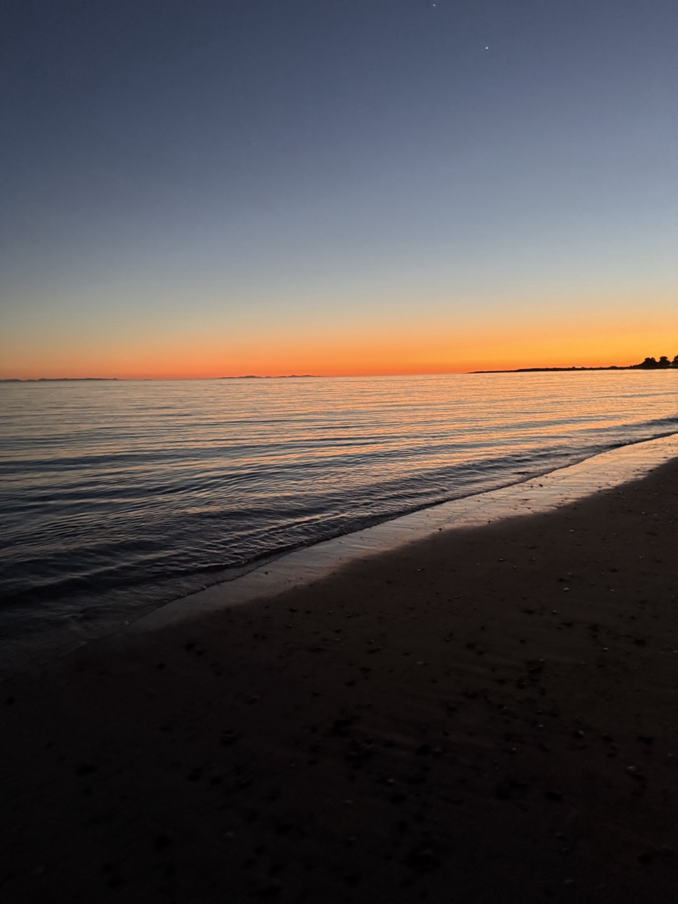

Respect for the land
The earth is not a resource but a relative. We move gently, give thanks, and take only what is offered.
Our Story
Our culture, our history, and the living traditions that guide our healing work today.
Our people
[Replace this with your tribe's story.] For countless generations, our people have lived in relationship with this land, its rivers, its seasons, its plants and creatures. From this relationship grew a deep understanding of healing as harmony among all living things.
Our elders carried songs, ceremonies, and plant medicine knowledge through every hardship, keeping the teachings safe so they could be passed on. We honor them in everything we do.
What we hold sacred
The earth is not a resource but a relative. We move gently, give thanks, and take only what is offered.
Healing is never done alone. We give and receive in balance, and we care for one another across generations.
We protect our traditions and share them with intention, so that ancestral wisdom continues to live and heal.

Why we began
[Replace with how Ancestral Encounters began.] Ancestral Encounters was born from a wish to keep these teachings alive, and to share them, with care, beyond our own community. So many people today feel disconnected from the land, from their lineage, from themselves.
We offer ceremony, learning, and journeys as a bridge back to wholeness, guided always by respect for where this knowledge comes from.
See how we work